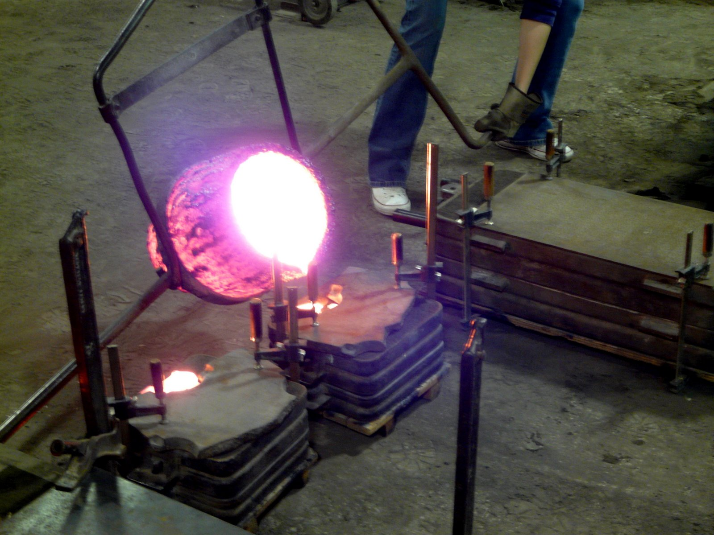
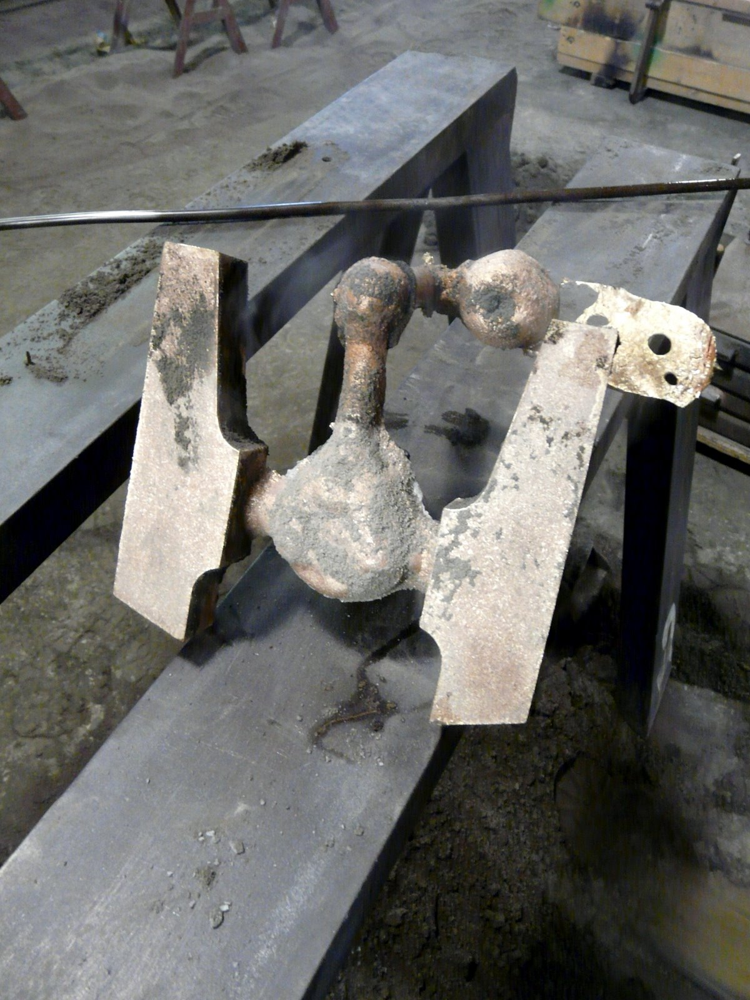
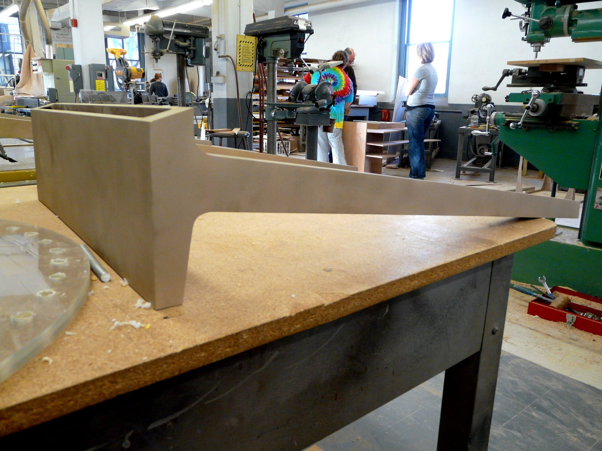
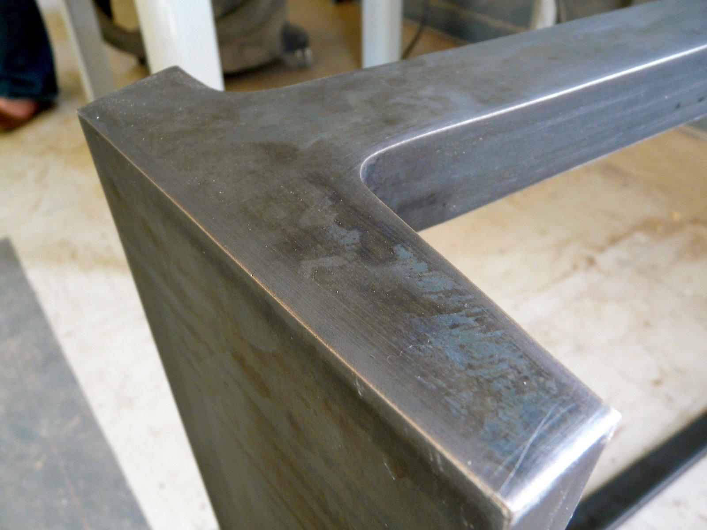
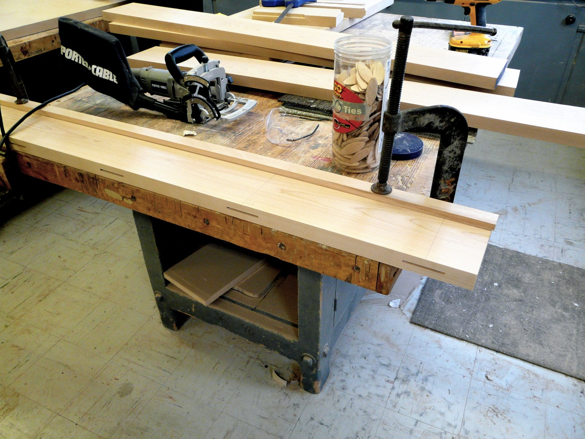
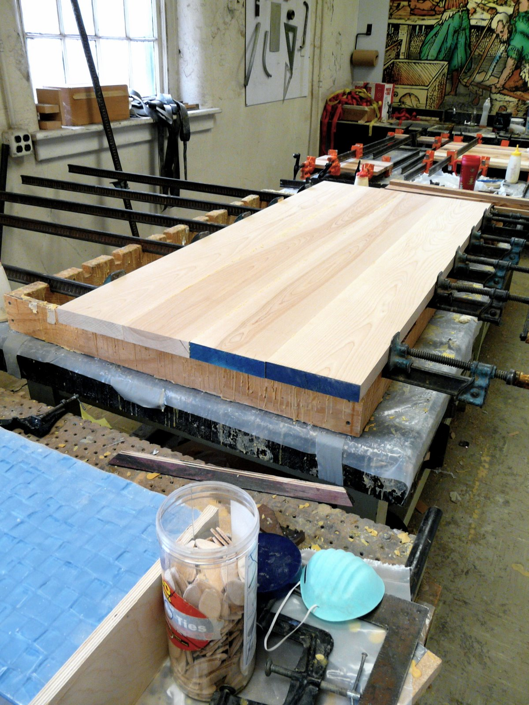
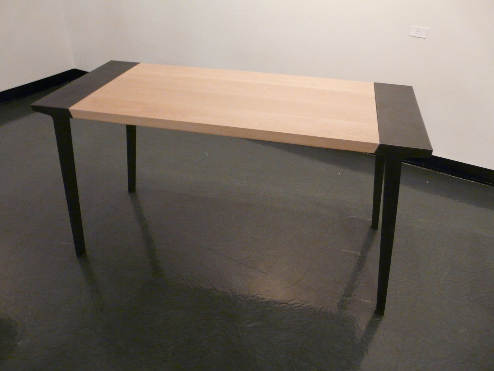
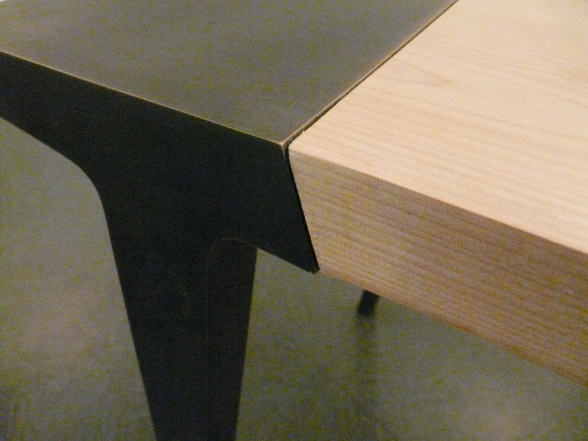

The Morton Desk is named after its only connection, the mortis and tenon joint, which connects the solid birch top to the bronze end pieces. The design requirements called for a piece of furniture that could be easily disassembled to one quarter or less of its fully assembled size.
Casting the Bronze

Eligius Bronze, located in Kansas City, Missouri, offered to let me use their foundry to cast the bronze end pieces. I made a 1:1 copy of each end piece (in multiple sections) out of Trupan MDF, a lightweight material that was used to make the negative mould out of sand.

After only a half hour, even though they were still smoldering, the pieces were ready to be taken out and looked over for imperfections. Luckily, everything came out great on the first try! Now they can be ground down, welded together and sanded.
Applying the Patina

The bronze was a beautiful golden color, but I wanted the final piece to provide a dark/light contrast and the light-colored Birch wood that I chose would have clashed horribly.

The liquid patina solution was applied with a spray bottle and wiped evenly over the surface of the metal. The oxidation resulted a neat blackish-green mottled surface. I then burnished the edges with a brillo pad, bringing back a little bronze highlight to the edges.
Building the Birch Top

The easiest way to connect the 6-inch wide planks of Birch was to use a biscuit cutter along with pre-cut biscuits and wood glue.

With all the glue applied, the next step was to clamp everything together and wait!
The Final Piece


After using a router to create the tenon joints on either side, the Birch wood was given a Danish soap finish and fitted snugly into each end piece. The Morton Desk was then put on display at the Kemper Gallery, located on the Kansas State campus.